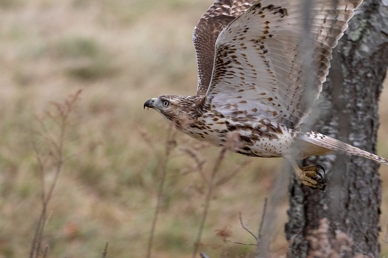

>> 85 -90% of the red-tailed hawk’s diet is composed of small rodents.
>> The hawk’s average life span in the wild is 20 years.
>> The red-tailed hawk is capable of “kiting,” holding still against the wind on set wings, much like a kite tugging against string. It’s one of the few birds able to do so.

>> The red-tail is the largest hawk, usually weighing between 2 and 4 pounds. As with most raptors, the female is nearly 1/3 larger than the male and may have a wingspan of 56 inches.
>> The eyesight of a hawk is 8 times as powerful as a human’s.
>> The Red-tailed Hawk has hoarse and rasping 2- to 3-second scream that is most commonly heard while soaring. They are loudest when defending their nest.